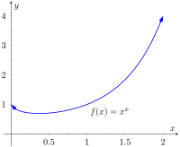

While this chapter is devoted to learning techniques of integration, this section is not about integration. Rather, it is concerned with a technique of evaluating certain limits that will be useful in the following section, where integration is once more discussed.
Our treatment of limits exposed us to the notion of “0/0”, an indeterminate form. If \(\lim\limits_{x\to c}f(x)=0\) and \(\lim\limits_{x\to c} g(x) =0\text{,}\) we do not conclude that \(\lim\limits_{x\to c} f(x)/g(x)\) is \(0/0\text{;}\) rather, we use \(0/0\) as notation to describe the fact that both the numerator and denominator approach 0. The expression 0/0 has no numeric value; other work must be done to evaluate the limit.
Other indeterminate forms exist; they are: \(\infty/\infty\text{,}\)\(0\cdot\infty\text{,}\)\(\infty-\infty\text{,}\)\(0^0\text{,}\)\(1^\infty\) and \(\infty^0\text{.}\) Just as “0/0” does not mean “divide 0 by 0,” the expression “\(\infty/\infty\)” does not mean “divide infinity by infinity.” Instead, it means “a quantity is growing without bound and is being divided by another quantity that is growing without bound.” We cannot determine from such a statement what value, if any, results in the limit. Likewise, “\(0\cdot \infty\)” does not mean “multiply zero by infinity.” Instead, it means “one quantity is shrinking to zero, and is being multiplied by a quantity that is growing without bound.” We cannot determine from such a description what the result of such a limit will be.
This section introduces l'Hospital's Rule, a method of resolving limits that produce the indeterminate forms 0/0 and \(\infty/\infty\text{.}\) We'll also show how algebraic manipulation can be used to convert other indeterminate expressions into one of these two forms so that our new rule can be applied.
Subsection6.7.1L'Hospital's Rule with indeterminate forms \(0/0\) and \(\infty/\infty\)
Theorem6.7.1.L'Hospital's Rule, Part 1.
Let \(\lim\limits_{x\to c}f(x) = 0\) and \(\lim\limits_{x\to c}g(x)=0\text{,}\) where \(f\) and \(g\) are differentiable functions on an open interval \(I\) containing \(c\text{,}\) and \(g'(x)\neq 0\) on \(I\) except possibly at \(c\text{.}\) If
Note that at each step where l'Hospital's Rule was applied, it was needed: the initial limit returned the indeterminate form of “\(0/0\text{.}\)” If the initial limit returns, for example, 1/2, then l'Hospital's Rule does not apply.
The following theorem extends our initial version of l'Hospital's Rule in two ways. It allows the technique to be applied to the indeterminate form \(\infty/\infty\) and to limits where \(x\) approaches \(\pm\infty\text{.}\)
Theorem6.7.3.L'Hospital's Rule, Part 2.
Let \(\lim\limits_{x\to a}f(x) = \pm\infty\) and \(\lim\limits_{x\to a}g(x)=\pm \infty\text{,}\) where \(f\) and \(g\) are differentiable on an open interval \(I\) containing \(a\text{.}\) If
where \(L\) is a real number, or \(L=\pm\infty\text{.}\) The result applies to one-sided limits as well.
Let \(f\) and \(g\) be differentiable functions on the open interval \((a,\infty)\) for some value \(a\text{,}\) where \(g'(x)\neq 0\) on \((a,\infty)\) and \(\lim\limits_{x\to\infty} f(x)/g(x)\) returns either \(0/0\) or \(\infty/\infty\text{.}\) If
We can evaluate this limit already using Theorem 1.6.16; the answer is 3/4. We apply l'Hospital's Rule to demonstrate its applicability.
\begin{equation*}
\lim_{x\to\infty} \frac{3x^2-100x+2}{4x^2+5x-1000}\stackrel{\,\text{ by LHR } \,}{=} \lim_{x\to\infty} \frac{6x-100}{8x+5} \stackrel{\,\text{ by LHR } \,}{=} \lim_{x\to\infty} \frac68 = \frac34\text{.}
\end{equation*}
\begin{equation*}
\lim\limits_{x\to \infty}\frac{e^x}{x^3} \stackrel{\,\text{ by LHR } \,}{=} \lim_{x\to\infty} \frac{e^x}{3x^2} \stackrel{\,\text{ by LHR } \,}{=} \lim_{x\to\infty} \frac{e^x}{6x} \stackrel{\,\text{ by LHR } \,}{=} \lim_{x\to\infty} \frac{e^x}{6} = \infty\text{.}
\end{equation*}
Recall that this means that the limit does not exist; as \(x\) approaches \(\infty\text{,}\) the expression \(e^x/x^3\) grows without bound. We can infer from this that \(e^x\) grows “faster” than \(x^3\text{;}\) as \(x\) gets large, \(e^x\) is far larger than \(x^3\text{.}\) (This has important implications in computing when considering efficiency of algorithms.)
Subsection6.7.2Indeterminate Forms \(0\cdot\infty\) and \(\infty-\infty\)
L'Hospital's Rule can only be applied to ratios of functions. When faced with an indeterminate form such as \(0\cdot\infty\) or \(\infty-\infty\text{,}\) we can sometimes apply algebra to rewrite the limit so that l'Hospital's Rule can be applied. We demonstrate the general idea in the next example.
Example6.7.5.Applying l'Hospital's Rule to other indeterminate forms.
As \(x\rightarrow 0^+\text{,}\)\(x\rightarrow 0\) and \(e^{1/x}\rightarrow \infty\text{.}\) Thus we have the indeterminate form \(0\cdot\infty\text{.}\) We rewrite the expression \(x\cdot e^{1/x}\) as \(\ds\frac{e^{1/x}}{1/x}\text{;}\) now, as \(x\rightarrow 0^+\text{,}\) we get the indeterminate form \(\infty/\infty\) to which l'Hospital's Rule can be applied.
Interpretation: \(e^{1/x}\) grows “faster” than \(x\) shrinks to zero, meaning their product grows without bound.
As \(x\rightarrow 0^-\text{,}\)\(x\rightarrow 0\) and \(e^{1/x}\rightarrow e^{-\infty}\rightarrow 0\text{.}\) The the limit evaluates to \(0\cdot 0\) which is not an indeterminate form. We conclude then that
Interpretation: since this limit evaluates to 0, it means that for large \(x\text{,}\) there is essentially no difference between \(\ln(x+1)\) and \(\ln(x)\text{;}\) their difference is essentially 0.
The limit \(\lim\limits_{x\to\infty} x^2-e^x\) initially returns the indeterminate form \(\infty-\infty\text{.}\) We can rewrite the expression by factoring out \(x^2\text{;}\)\(\ds x^2-e^x = x^2\left(1-\frac{e^x}{x^2}\right)\text{.}\) We need to evaluate how \(e^x/x^2\) behaves as \(x\rightarrow \infty\text{:}\)
\begin{equation*}
\lim_{x\to\infty}\frac{e^x}{x^2} \stackrel{\,\text{ by LHR } \,}{=} \lim_{x\to\infty} \frac{e^x}{2x} \stackrel{\,\text{ by LHR } \,}{=} \lim_{x\to\infty} \frac{e^x}{2} = \infty\text{.}
\end{equation*}
Thus \(\lim_{x\to\infty}x^2(1-e^x/x^2)\) evaluates to \(\infty\cdot(-\infty)\text{,}\) which is not an indeterminate form; rather, \(\infty\cdot(-\infty)\) evaluates to \(-\infty\text{.}\) We conclude that \(\lim\limits_{x\to\infty} x^2-e^x = -\infty\text{.}\) Interpretation: as \(x\) gets large, the difference between \(x^2\) and \(e^x\) grows very large.
Subsection6.7.3Indeterminate Forms \(0^0\text{,}\)\(1^\infty\) and \(\infty^0\)
When faced with an indeterminate form that involves a power, it often helps to employ the natural logarithmic function. The following Key Idea expresses the concept, which is followed by an example that demonstrates its use.
Key Idea6.7.6.Evaluating Limits Involving Indeterminate Forms \(0^0\text{,}\)\(1^\infty\) and \(\infty^0\).
If \(\lim\limits_{x\to c} \ln\big(f(x)\big) = L\text{,}\) then
This is equivalent to a special limit given in Theorem 1.3.12; these limits have important applications within mathematics and finance. Note that the exponent approaches \(\infty\) while the base approaches 1, leading to the indeterminate form \(1^\infty\text{.}\) Let \(f(x) = (1+1/x)^x\text{;}\) the problem asks to evaluate \(\lim\limits_{x\to\infty}f(x)\text{.}\) Let's first evaluate \(\lim\limits_{x\to\infty}\ln\big(f(x)\big)\text{.}\)
This result is supported by the graph of \(f(x)=x^x\) given in Figure 6.7.8.

Figure6.7.8.A graph of \(f(x)=x^x\) supporting the fact that as \(x\to 0^+\text{,}\)\(f(x)\to 1\)
Our brief revisit of limits will be rewarded in the next section where we consider improper integration. So far, we have only considered definite integrals where the bounds are finite numbers, such as \(\ds \int_0^1 f(x)\, dx\text{.}\) Improper integration considers integrals where one, or both, of the bounds are “infinity.” Such integrals have many uses and applications, in addition to generating ideas that are enlightening.
Exercises6.7.4Exercises
Terms and Concepts
1.
List the different indeterminate forms described in this section.
2.
T/F: l’Hospital’s Rule provides a faster method of computing derivatives.
True
False
3.
l’Hospital’s Rule states that \(\ds \frac{d}{dx}\left[\frac{f(x)}{g(x)}\right] = \frac{\fp(x)}{g'(x)}\text{.}\)
True
False
4.
Explain what the indeterminate form “\(1^\infty\)” means.
5.
Fill in the blanks: The Quotient Rule is applied to \(\ds \frac{f(x)}{g(x)}\) when taking ; l’Hospital’s Rule is applied when taking certain .
6.
Create (but do not evaluate!) a limit that returns “\(\infty^0\)”.
7.
Create a function \(f(x)\) such that \(\lim\limits_{x\to 1}f(x)\) returns “\(0^0\)”.
8.
Create a function \(f(x)\) such that \(\ds \lim_{x\to \infty}f(x)\) returns “\(0\cdot\infty\)”.
Problems
Exercise Group.
In the following exercises, evaluate the given limit.
9.
Use l’Hospital’s Rule to evaluate the limit: \(\lim\limits_{x\to 1} \frac{{x^{2}+x-2} }{{x-1}}\)